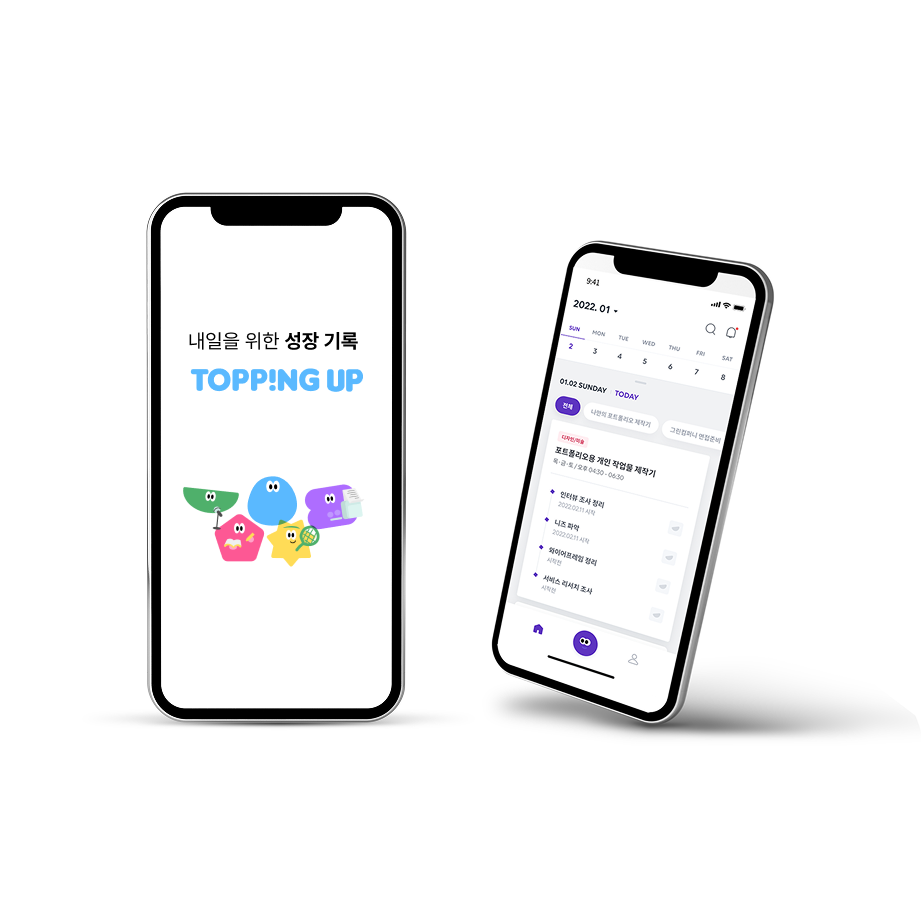
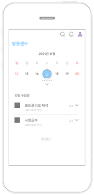
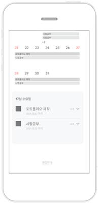
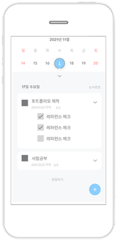
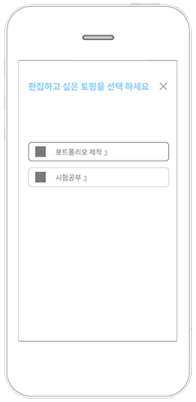
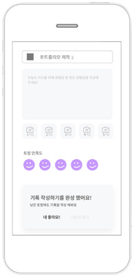

Selected Works 2020–2026
서비스·프로덕트 기획 포트폴리오
화면을 그리기 전에 서비스가 멈추는 지점을 찾습니다.
About
2020년부터 웹·앱 서비스를 기획했습니다. 사용자 조사와 정보구조, 화면 설계뿐 아니라 현장 운영과 정책, 구현 이후의 수정 범위까지 함께 다뤄 왔습니다.
기획자가 화면까지만 그리고 손을 떼면 서비스는 현장에서 멈출 수 있습니다. 그래서 사용자가 보는 흐름과 운영자가 판단하는 기준을 함께 설계해 왔습니다.
Career
2025.05 – 2025.09
대한법률구조공단
UX/UI 파견
2024.10 – 2024.12
주식회사 멸치
매니저 / 서비스기획
2020.07 – 2026.08
브리밍 (구 위로스튜디오)
대표 / 프로젝트 PM
Product Planning
토핑업은 취업·이직 준비자가 다른 사람의 준비 루틴을 참고하고, 자신의 일정으로 가져와 관리하는 커리어 기록 앱입니다. 목표만 정한 뒤 빈 계획표를 채우게 하는 대신, 비슷한 준비 과정을 살펴보고 수정해 시작하도록 설계했습니다.

월간 일정과 오늘 해야 할 세부 과제를 한 화면에 둔 토핑업 핵심 화면 콘셉트 화면
Key Screens
서로 연결된 여러 일정을 하나의 준비 단위로 묶어 목적과 순서를 보존했습니다.
화면은 참고 - 수정 - 기록 순서를 유지했습니다.




